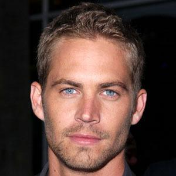

Biografia - Resumo
Paul William Walker nasceu em 12 de setembro de 1973 na cidade de Glendale, Califórnia e cresceu em San Fernando Valley, arredores de Los Angeles. Filho de Paul Walker III e Cheryl, uma ex-modelo,possui ascendência inglesa, irlandesa e alemã e foi criado como membro da Igreja de Jesus Cristo dos Santos dos Últimos Dias, ou Mórmons. Formou-se na Village Christian Schoo e após o colegial, frequentou diversas faculdades da comunidade, buscando uma carreira em biologia marinha.
Apareceu nas telas desde cedo, quando estrelou um comercial de fraldas logo após seu nascimento. Aos dois anos de idade, ele já trabalhava como modelo mirim, e aos oito anos de idade ele conquistou papéis em grandes seriados de televisão, como Who's the Boss, The Young and the Restless e O Toque de Um Anjo. Walker estrelou seu primeiro filme, a comédia de terror Monster in the Closet (1986), aos treze anos de idade. Após conquistar papéis pequenos em produções de pouco sucesso, o ator obteve participações em títulos que conquistaram o público, como Pleasantville - A Vida em Preto e Branco (1998) e Ela É Demais (1999).
Sem dúvida, o filme que transformou a carreira de Walker foi Velozes & Furiosos (2001), no qual atuou ao lado de Vin Diesel. Com os ótimos resultados desta trama de ação, e com o sucesso das sequências, ele também foi chamado para liderar outras produções de ação, como Perseguição (2001), Linha do Tempo (2003) e Mergulho Radical (2005). Enquanto isso, continuou a trabalhar como modelo, principalmente como o símbolo de uma marca de perfumes. Paralelamente às grandes produções, Walker também trabalhou em pequenos filmes independentes, como o drama Entre a Vida e a Morte (2008) e a comédia Pawn Shop Chronicles (2013).
Causa do óbito
Paul Walker já tinha começado a filmar Velozes & Furiosos 7, quando sofreu um acidente que causou sua morte, dia 30 de novembro de 2013.
O departamento de polícia do condado de Los Angeles informou, no dia 04 de dezembro de 2013, a causa da morte do ator Paul Walker. Ele morreu por ferimentos após "lesões traumáticas e térmicas" decorrentes do impacto e explosão no acidente. O resultado da autópsia foi divulgado em primeira mão pelo TMZ, site especializado em celebridades.
A autópsia esclareceu que Walker não morreu apenas com o impacto do acidente. O ator foi queimado até a morte, segundo o laudo. O homem que estava dirigindo o Porsche GT, Roger Rodas, morreu de múltiplas lesões traumáticas sofridas no momento da batida.
Segundo o legista Ed Winter, em relato ao jornal "Los Angeles Times", os dois morreram "em questão de segundos".
Os dois só foram reconhecidos por causa dos registros das arcadas dentárias. A polícia já havia descartado a hipótese de que Walker estivesse em um racha quando o carro bateu. Um comunicado relatou que o Porsche Carrera GT era o único carro no local naquele momento.
"A velocidade foi um fator no acidente", disse o gabinete do xerife de Los Angeles à rede CNN. Um comunicado das autoridades afirmou que o resgate chegou quando o veículo ainda estava pegando fogo. Após apagarem as chamas, os bombeiros encontraram dois ocupantes, que foram declarados mortos no local. Walker e Rodas estavam a 140 km/h, segundo fontes que investigam o caso, ouvidas pela revista "People".
Local de origem
Glendale, Califórnia, USA.
Homenagem
O vídeo abaixo é uma homenagem ao ator, que faleceu durante as filmagens de 'Velozes & Furiosos 7'.